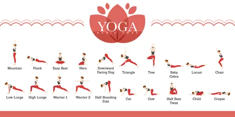

Our Services
Why Choose Us
We provide preventive care and multidimensional treatment for all kinds of physical and psychosomatic problems.
Orthopedic & Neurological Problems
- Arthritis (Rheumatoid/Osteo)
- Joint Pain, Slip Disc, Sciatica
- Back Pain, Muscle Pain
- Cervical Spondylosis
- Neck Stiffness, Frozen Shoulder
Digestive Problems
- Constipation, Gas, Acidity
- Indigestion, Piles, Ulcers
- Liver Disorder
- Obesity, Diabetes
Mental & Psychosomatic Problems
- Depression, Insomnia, Phobia
- Stress, Mental Blockage
- Low Mood, Habit Change
Cardiac & Respiratory Problems
- High Blood Pressure
- Varicose Veins, AVN/DVT
- Asthma, Bronchitis, Allergy
- Post-COVID Care
Hormonal & Gynecological
- PCOD / PCOS, Thyroid
- Infertility, Irregular Menses
- Hormonal Imbalance
- White Discharge, Anemia
Skin & Beauty Treatments
- Hair Fall, Psoriasis, Eczema
- Warts/Skin Tags, Acne
- Skin Tightening, Anti-Aging
- Body Shaping, Figure Correction
“True healing begins when the body listens to nature, the mind finds stillness, and the soul feels nurtured.”
LEARN FROM THE BASICS

Discover the foundation of yoga with basic poses that improve strength, flexibility, and balance. Perfect for beginners, these poses help calm the mind, enhance body awareness, and support overall well-being.
“Let food be thy medicine and medicine be thy food.”
We believe in the power of nature, the wisdom of tradition, and the strength of the inner spirit.